갑작스런 태국출장이었다. 신청해놓은 베트남 비자를 취소하고, 여권 다시 찾아, 태국으로 필드테스트 가게 됐다. 이번에는 변이사님과 단 둘이 갔다. 일주일 출장이어서 환전은 10만원을 했다. 7월 21일 싱가폴항공을 탔다. 비행기는 좋더군. 서비스는 대한항공과 아시아나의 중간정도쯤 되는 것 같군. 아직까지는 나에게 서비스 1위의 항공사는 타이항공이다. 5시간 정도 걸려 도착한 방콕의 돈무앙공항. 두 번째로 오니 친숙하더군. 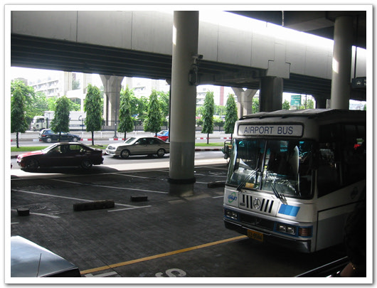 - 돈무앙 공항. 건물밖으로 나가는 순간 그 뜨거운 열기란... 호텔은 전과 같은 사톤 맨션. 이번에는 수영복과 물안경도 준비를 했지. 내 전용 풀장을 활용하기 위하여……. 22일 화요일. 이틀째다. Mr. Joe와 함께 방콕근교를 돌아다녔다. Joe는 한 40대정도 되어 보이는 아저씨로서, 우리 회사와 AIS를 이어주는 contact point라 한다. 자기 사업도 따로 하고 있다는데, 정확히 어떤 역할인지는 잘 모르겠다. 예전에 최부장님의 Joe에 대한 묘사에 따르면, 이마에 "나 착한 사람" 이라고 딱 써져 있는 사람이다. 착하고, 친절하고, 매우 순박하다. 처음간곳은 차청사오. 방콕 동쪽 60km정도에 위치해 있는 조그마한 도시이다. 태국은 방콕 외에는 별로 발달해 있는 것 같다. 방콕만 딱 벗어나면 풀과 야자수로만 가득한 곳이다. 차청사오 한 바퀴를 돌고서 간곳은 차청사오 밑에 있는 촌부리다. 이 곳 촌부리에 Reset이 세 번이 일어나서, 이 곳에만 올 때까지 테스트를 했었다. - 이런 자세로 테스트를 한다 촌부리에서 그 다음 간 곳은 나콘파톤. 방콕 서쪽 70km 정도 떨어진 곳이다. 촌부리에 거기까지 가는데, 한 두어 시간을 시속 120km로 계속 갔었던 것 같다. 두 시간을 그렇게 가니, 멀미가 날 지경이더군. 나콘파톤 한번 쭉 훑어보고 나서 간 곳은 논타부리. 방콕 북쪽 30km에 위치해 있다. 그러고 나서 호텔로 돌아 왔다. 차에서만 10시부터 6시까지 있었으니, 속도 미식거리고 허리도 뻐근하더군. 그렇게 장시간 운전을 한 Joe는 차에서 내릴 때 다리가 휘청거리더군. 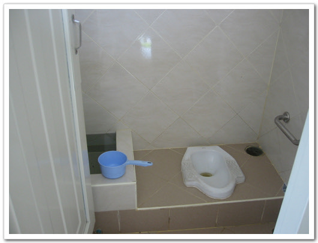 - 태국의 화장실. 휴지는 보통 없고, 옆에 있는 물로 뒤처리를 한다. 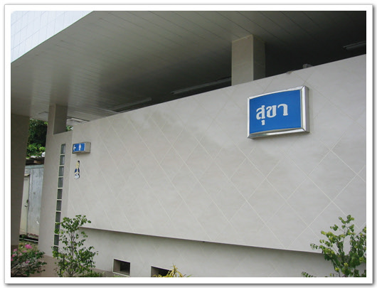 - 남자 화장실 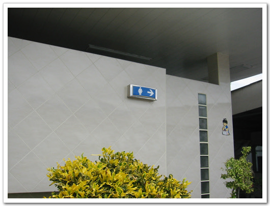 - 여자 화장실. 불교국가라 여보살이 그려져 있다. 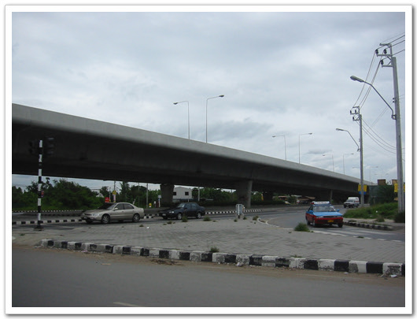 - 태국은 우리와 반대로 좌측통행 방식이다 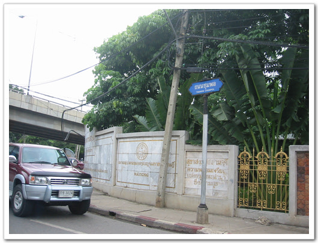 - 왠만한 글자나 담장의 색깔이 위처럼 금색이다. 왕년에 마르코폴로의 동방견문록에서 기록된 황금의 나라라는 게 바로 이 태국의 금빛 건물들을 보고 그랬다라고 풍문이 있기도 하다. 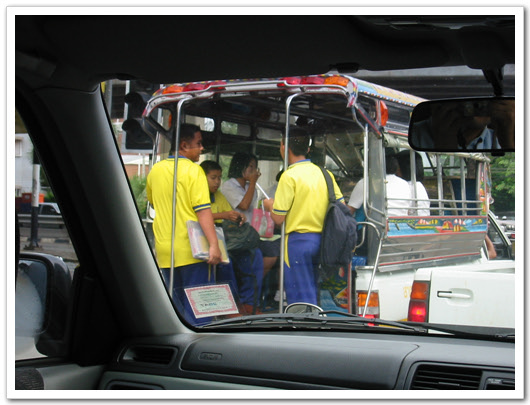 - 이렇게 트럭을 개조하여 만든게 툭툭이다. 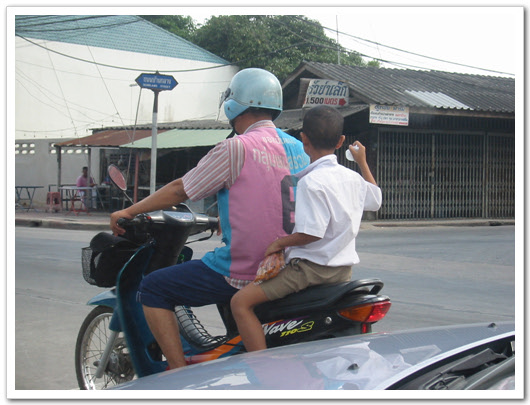 - 오토바이도 꽤 많이 보인다 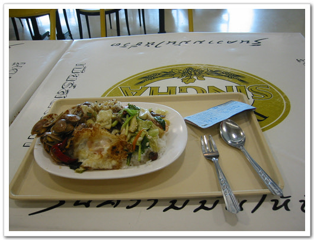 - 이날 푸드코트에서 먹는 음식. 30바트 우리돈으로 900원짜리 밥이다. 맛은 괜찮다. 국물이 없어 좀 아쉽기는 했는데, 국물 주문하는 방법을 몰라서 그냥 이것만 먹었다. 23일 수요일. AIS와 회의가 있기로 한 날인데, 다음 날로 연기됐다. 하루 종일 호텔에서 SMS 글자 잘리는 문제 수정하고, 버전 릴리즈 준비하였다. 별거 없는 날이었다. 아직까지도 가져온 내 전용 풀장을 못 이용했다.  - 이게 내 전용 풀장이다 24일 목요일. AIS에서 회의를 하였고, 그리고 이 날 홍콩의 Skyworks사에서 Kelvin이란 엔지니어가 우리의 reset문제를 잡기 위해 왔다. Kelvin은 예전 광저우에 있을 때 한번 봤었었다. Kelvin과 식사를 위해 방콕의 다운타운가로 나갔다. 이번 출장 와서 처음으로 나가는 다운타운가다. 시암센터로 가서 저녁을 먹었다. 시암이 어떤 곳인가 하면, 방콕에는 전철에 두개 노선이 있는데, 그 환승역이다. 우리의 강남역이나 대학로 정도 된다. 젊은애들이 많아 방콕에서 가장 물이 좋다는 곳이다. 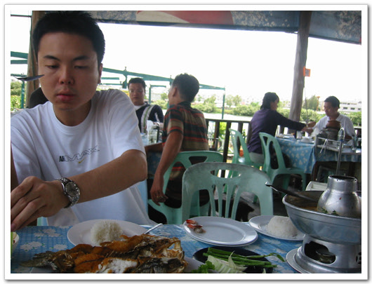 - 이 사람이 Kelvin이다. 나이는 스물일곱정도 된다고 한다. 엄청 잘 먹는다. 거의 나의 두배를 먹는다. 저녁을 먹고 나서, 변이사님은 나에게 뒷일을 부탁한다하며 방콕을 떴다. Kelvin과 함께 문제해결을 도와 다 해결되면 돌아오라는 말과 함께. 오~호~ 하며 속으로 쾌재를 불렀다. 드디어 방콕 대탐험의 기회가 나에게 주어진 것이다. kelvin이 일요일까지 머무를 예정이니, 월요일부터 내 세상이 되는 것이다. 25일 금요일. 9시에 Joe가 운전하는 차를 타고, Kelvin과 촌부리로 향했다. reset을 재현하기 위하여. 촌부리에 10시쯤 도착하여, 오후 4시까지 계속 테스트하였으니, 문제의 그 현상이 발생하지 않았다. 눈물을 머금고 다시 호텔로 돌아왔다. 역시 이 날도 Joe는 다리가 휘청거렸다. - 태국의 집들은 다들 앞에 보이는 것처럼 조그마하는 탑 같은 것을 가지고 있다. 호텔로 들어오니 Kelvin이 아주 근사한 것을 먹자고 한다. 난 오로지 싼 현지 음식만을 찾는데 비해, 얘는 싼 물가를 이용해 이곳에서 포식할 생각을 갖고 있는 거였다. 나의 태국여행 가이드를 뒤져보니, 프롬퐁역의 스쿰비트 거리에 대형 Sea food 레스토랑이 있는데, 아주 유명한 곳이라더군. 그래서 거기로 갔다. 입구부터가 크더군. 간판은 Sea Food Market이고, 수식어는 If it swims, we have it 라고 적혀 있더군. 해석하자면 헤엄치는 것은 다 먹겠다는 뜻같더군. 아마 주인장은 광동출신 사람인가 보다. 이곳은 자기가 직접 음식재료를 고르면, 그걸 요리를 해주는 곳이다. 가서 음식들이 골랐다. Kelvin이 옆에서 자꾸 king Crab, 랍스터 이런 소리를 하는 거다. 그래서 댑다 큰 King Crab 한 마리와 또 댑다 큰 왕 새우 두 마리하고, 감자하고 아스파라거스 한다발하고, 콩나물 한 다발, 버섯 한줌, 빵 두 봉지, 람부탄 한 봉지, 파인애플 반쪽, 그리고 무슨 조개 비슷한 거 속살을 한 봉지 샀다. 가격은 2100바트 정도. 그걸 요리해서 갖다 주는데 엄청나게 많더군. 요리비는 670바트 정도 나온 것 같다. 내가 1/3 정도 먹고, Kelvin은 2/3정도 먹었다. Kelvin은 홍콩에서 이렇게 먹으려면, 10배는 더 든다하고 하며, 이곳 태국에서 비싼 음식을 실컷 먹게 되어서, 아주 좋다고 그러더군. 음식값은 더치페이를 했다. 내가 일주일 더 있기에는 현금이 부족하기에 내가 카드 깡을 했지. 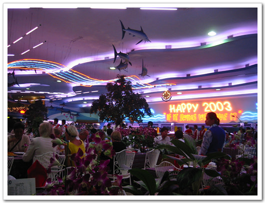 - 여기가 Sea Foot Market 안. 손님은 외국인들이 대부분인 듯했다. 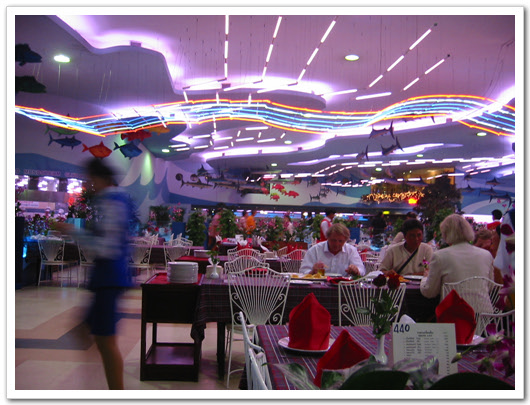 - 재료를 고르고 나서 자리에 앉으면 조리하여 갖다 준다. 26일 토요일. 봉고차를 렌트했다. 운전사 포함해서. 역시 출발시각은 9시. 봉고차를 타고 촌부리로 갔다. 세 번째 같은 곳만 가니 지겹더군. 어쩔 수 있나, reset을 재현해야 나의 이곳 방콕의 존재의 이유가 되기에……. 역시나 재현은 안 되더군. 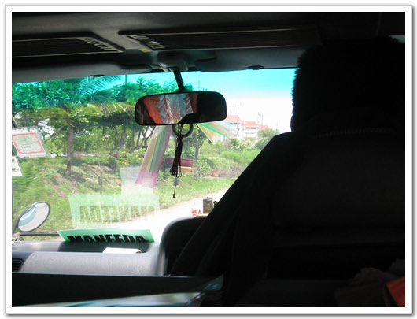 - 12인승 봉고차를 빌려 타고서 간다. 열대성 스콜이라, 비와 왔다가 금방 쨍쨍하고 그렇다. 촌부리시내뿐 아니라, 근처도 근교도 돌았다. 촌부리가 바닷가에서 매우 가까이 있었다. 촌부리의 바닷가 해수욕장이 빵센이란 거다. 이런 곳을 또 놓칠 수 있나. 가봤지. 비가 오는 날씨라 사람들이 별로 없었다. 파타야가 외국인들에 널리 알려진 곳인데 반해, 이곳 빵센은 내국인인들이 주로 이용하는 해변 같았다. 쭉 돌아봤는데, 외국인은 없어 보이더군. 바닷물은 누리팅팅한게, 방콕에서 가까워서 인가, 지저분해보이더군. 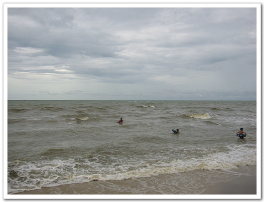 - 빵센 해수욕장. 바람도 많이 불고 비도 내려 사람들은 별로 없었다. 누리끼리한 바닷물 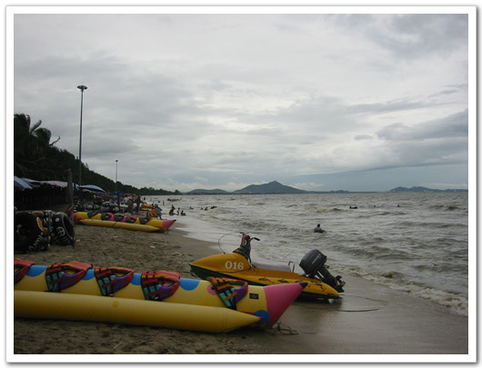 - 바나나보트. 재밌는 건데.. 놀러 왔었으면 이 걸 타면서 놀텐데.. 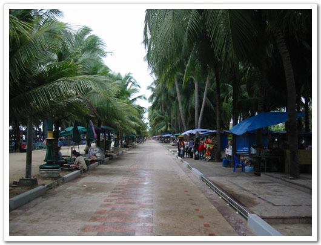 - 노점상들이 즐비한 빵센 해변가 호텔로 들어왔을 때, Kelvin이 이번엔 쇼핑을 하자고 하더군. 홍콩 사는 자기 친구들이 자기 태국 간다니깐, 태국에서 꼭 돼지고기말린과자 사오라고 했다면서.. 그래서 Kelvin을 데리고 차이나타운으로 갔다. 차이나타운 근처에는 전철이 없어서, 택시를 타고 갔다. 택시비가 65바트 정도 나온 것 같다. 차이나타운이 딱 내 분위기더군. 바글거리는 사람들과 거리의 노점상, 널려 있는 가판음식점들.. 거기서, Kelvin의 과자도 사고, 길거리에서 중국국수도 사 먹었다. 이름이 완탕이라고 하는 것 같은데, 맛있더군. 가격은 30바트. 나 한 그릇 먹는 동안 Kelvin은 양이 부족했던지, 한 그릇 더 시켜먹더군. 역시 중국 사람들은 양이 크다. China town 쇼핑을 끝내고 조금 더 걷다보니, 벼룩시장도 있더군. 황학동 벼룩시장과 똑같은 형태다. 파는 물건들이다, 파는 형태도 똑같았다. 나중에 시간 내서 이곳을 다시 쭉 뒤져보리라 다짐했다. 방으로 돌아와서, msn에 접속하니, 변이사님이 내게 연장했던 일정취소하고, 월요일 새벽 비행기로 돌아오라고 하였다. 청천벽력과도 같은 소리였다. 나 혼자 만의 자유시간을 고대하며, 그 동안 딴 짓도 안하며 열심히 일했었는데……. 그날 밤 내겐 잠도 잘 오지 않더군. 잠이 드는데, 10분이나 소요되었다.
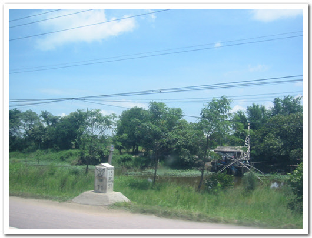 - 촌부리 근교. 강에는 저 물레방아처럼 생긴 것 들이 많이 돌고 있더군. 뭐하는 건지는 모르겠다. 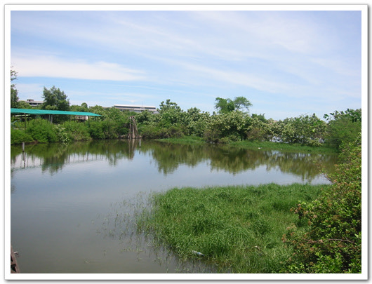 - 점심을 먹은 식당이 위치하는 못. 여기서 잡은 물고기를 요리해 주더군. 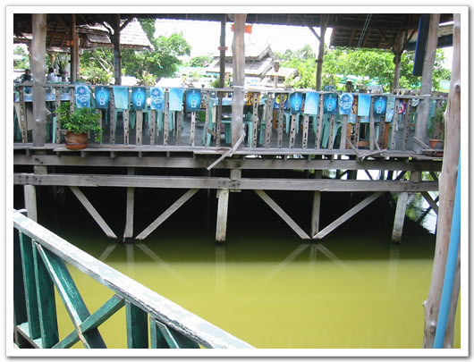 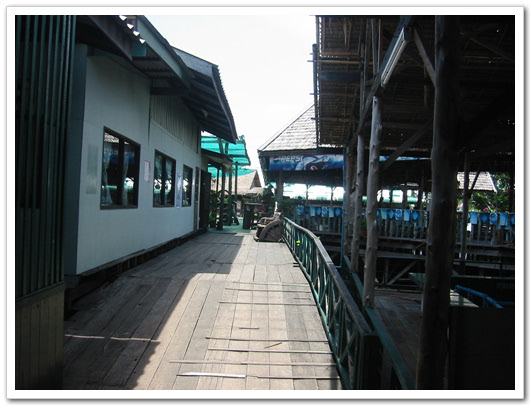 - 물 위에 지은 거라, 색다른 맛이 있다. 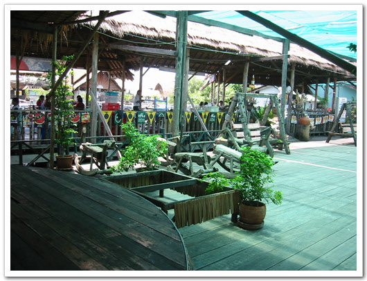 - 나무로 만든 흔들목마도 있어 타보고 싶었지만, 사회적 지위와 체면을 생각하여 참았다. 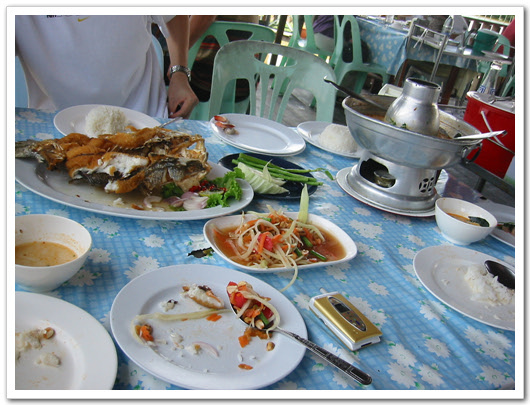 - 그 수상 식당에서 시켜 먹은 음식. 아직 돼지고기 요리가 덜 나온 상태다. 여자친구와 식구, 그리고 못생긴 조카들에게 줄 싸고 조잡한 선물을 사기 위해, 모치트역에 있는 차투착 주말시장에 갔다. 선물한 것들은 지난 번 출장때 봐둔 게 있었기에 구경은 별로 하지 않고, 샀다. 도자기 그릇 2개와 도자기로 만들어진 동물인형, 식물들을 사고, 비누공예품같은 꽃 모양을 샀다. 그릇 두개에 70바트였고, 동물인형 12개에 100바트, 식물모형 12개에 100바트 들었다. 꽃 모양은 50바트였다. - 세계최대 주말 시장이라 하는 짜투착 시장. 모치트 역 근처에 있다. 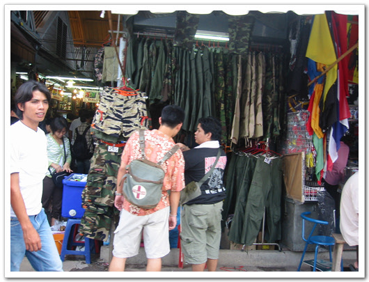 - 군용품들도 있고,. 하여간 많이 있다. 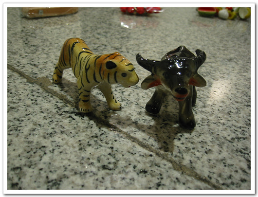 - 쇠 귀에 경 읽기 하는 늠름한 호랭이 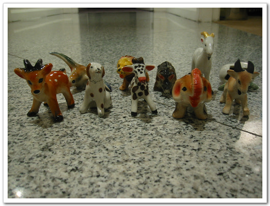 - 모여라 도자기 동물 친구들. 12개 100바트(3천원)다. 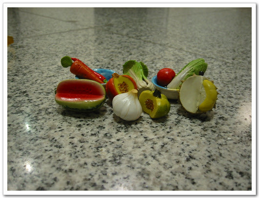 - 소꿉놀이 도자기 과일 세트. 이것도 12개에 100바트다. 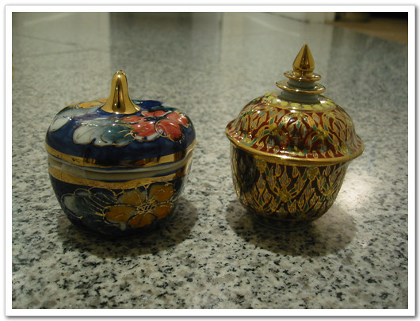 - 용도는 잘 모르겠다. 무슨 간장 그릇같기도 하고.. 두개에 70바트 줬다. 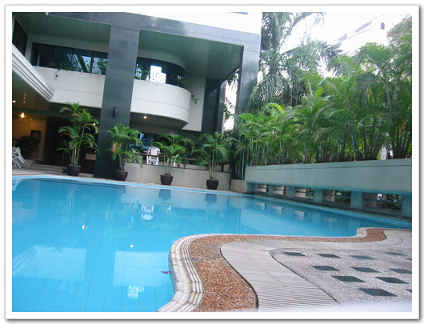 - 날도 어찌나 더운지.. 엄청 더운 날씨라, 온몸은 땀으로 흠뻑 젖었다. 다시 숙소로 돌아와 가져온 수영복을 입고 내 전용 수영장에서 수영좀 하고, 헬스기구들도 이용을 하였다. 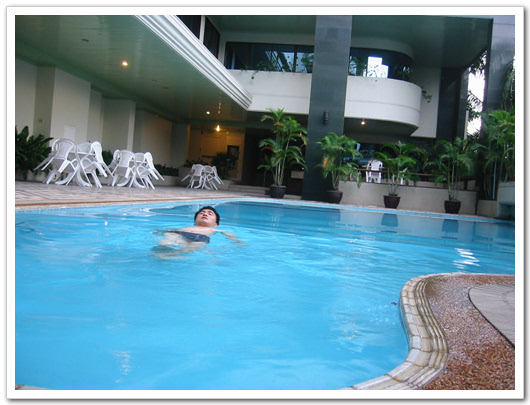 - 드디어 내 전용풀장에 몸을 담갔다. 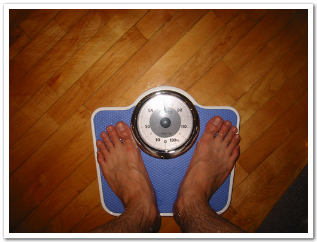 - 과체중 내 무게도 재보고.. 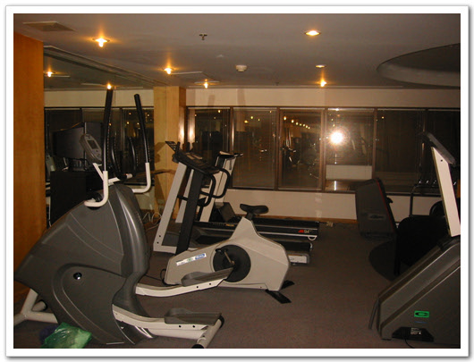 - 헬스시설도 이용해 보고.. 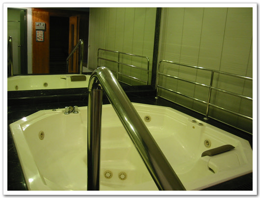 - 내 전용 스파시설도 있었지만, 물 채우기가 귀찮아 안했다. 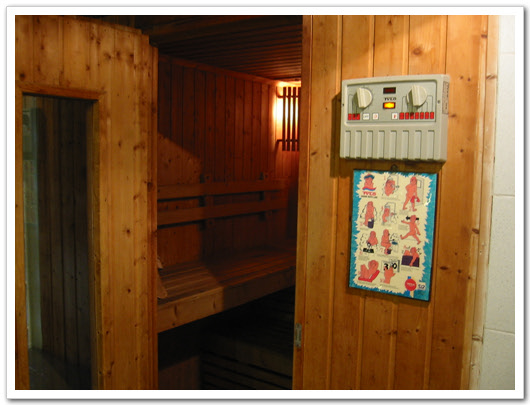 - 역시 내 전용 사우나도 있는데, 전원 스위치가 어디 있는지 몰라 포기했다. 다시 전의를 가다듬고 다음 목적지, 한인 타운으로 가기로 했다. 이미 내 돈을 다 떨어지고, 돌아갈 공항세 낼 돈도 없었다. 현금서비스받기는 싫고 하여, 대만 돈을 환전하기로 했다. 내가 다시 대만으로 갈 일도 없을 것 같고 해서.. 4천600원도 있어, 그걸 들도 아속 역으로 갔다. 인터넷으로 찾아보니 그 거리에 환전소가 있다고 했다. 600원은 지폐지만 너무 작은 돈이라 환전이 안 된다고 하였고, 4000원 환전하였다. 환율이 0.99라서 3990바트 정도 나왔다. 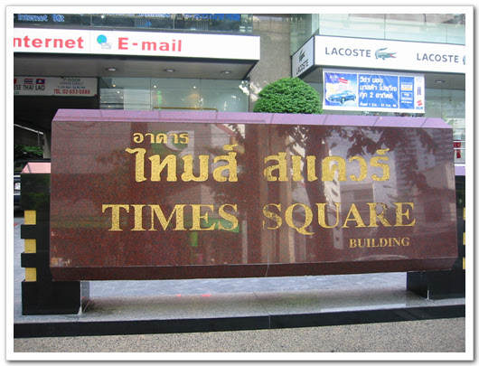 - 환전을 하기 위해 찾아간 거리. times square가 이정표 노릇을 한다. 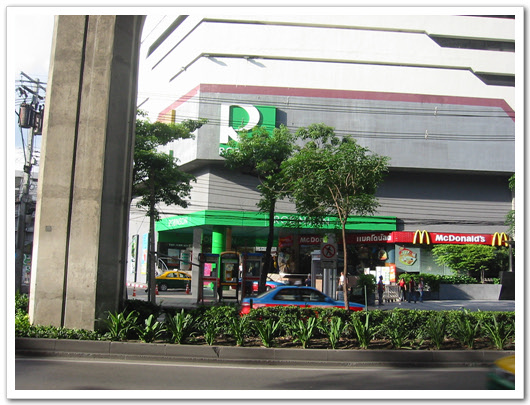 - 한인 타운이 저 로빈손 백화점 맞은 편에 있다. 로빈손 백화점은 아속역에서 바로 보인다. 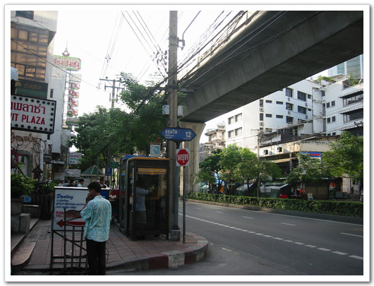 - 스쿰비트 소이 12. 왼쪽으로 들어가면 한인 타인이다. 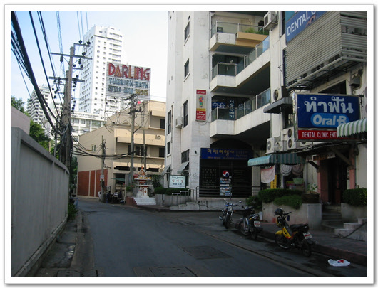 - 대한항공 마크가 우선 보이는군. 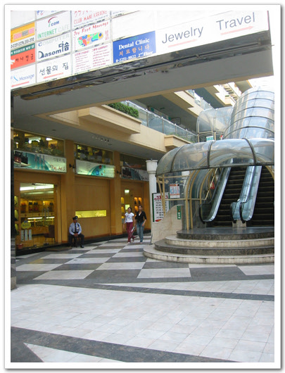 - 한인 타운 내부. 생각보다 크지는 않았다. 단지 큰 건물에 다 모여 있다는 것 뿐. 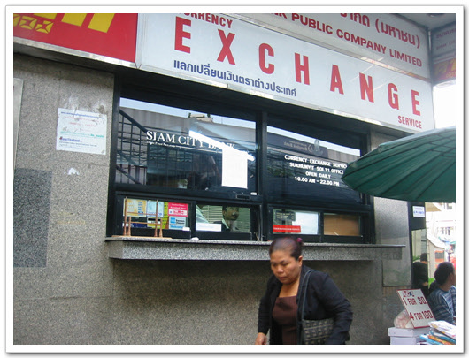 - 환전소. 이 스쿰비트 거리엔 환전소가 많다. 연중 무휴로 하는 것 같다. 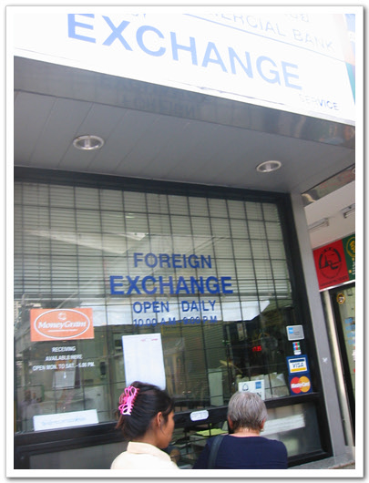 - 내가 돈을 바꾼 곳. 우리나라 돈도 취급하므로, 태국갈 때는우리 나라 돈도 충분이 가져가는 것이 좋을 듯 하다 아속역 부근, 그러니까 수쿰비트 거리는 외국인들이 많이 다니는 거리였다. 이태원모양으로 외국인상태 노점상들이 많이 있었다. 노점상들의 물품을 구경하던 중, 펼치면 모자가 되는 것을 발견하였다. 내 태국 여행가이드책에 설명되어 있기를 태국에서 기념품으로 살 만한 것들이라고 나와 있었기 때문이다. 시내 기념품가게에서 180바트 정도 되는 거라더군. 얼마냐고 물어보니 150바트 달라고 하더군. 비싸다고 했다. 그랬더니 얼마 정도 생각하느냐고 물어보기에 85바트 원한다고 했다. 그건 안 된다고 하며 몇 개 살 거냐고 했다. 2개 살 거라고 했다. 그러니 280바트에 주겠다고 했다. 그래서 난 200바트에 달라고 했다. 그랬더니 그럼 250바트에 주겠다고 하더군. 그래서 난 240바트를 불러 흥정을 끝내고 240바트에 두개 샀다. 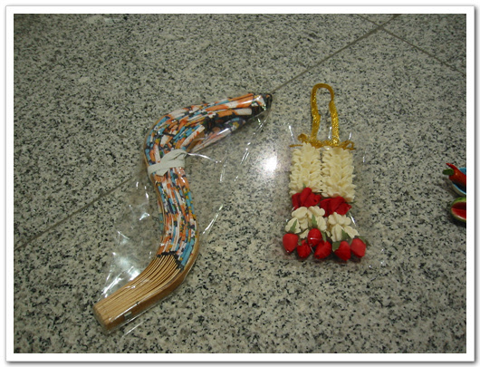 - 왼쪽에 있는 것이 펼치는 모자가 되는 거. 오른쪽이 태국에서 상당히 많이 보이던 인조 꽃 날씨는 더웠다. 체크아웃을 해야 하는데, 프런트 근무시간이 7시 반까지라고 하여 체크아웃 하러 다시 숙소에 가 체크아웃한 후, 이번엔 방콕 제일의 밤거리 파트퐁으로 갔다. 파트퐁은 가까이에 있었다. 전철역으로 실롬역. 전철을 타봤자 1정거장밖에 안되는 애매한 거리다. 전철탈려면 10분 정도 걸어야 하기에, 그냥 택시를 탔다. 40바트 나오더군. 파트퐁은 술집과 옷가게 기념품점들이 밀집해있는 거리였다. 그 거리를 가다보니, 곳곳에서 삐끼들이 erotic sexy show 라는 제목에 적힌 종이 쪼가리를 보여 주면 자기 술집으로 오라는 호객행위를 하였다. 술집들은 다들 문을 개방하고 있었는데, 힐끗 보니까 수영복 입은 여자들이 탁자위에서 그냥 몸 좀 흐느적거리는 것뿐이었다. 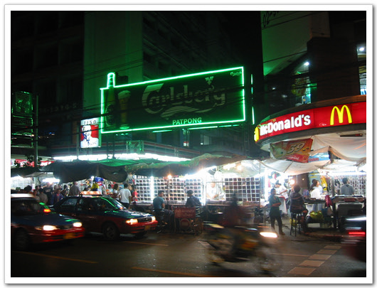 - 이곳이 바로 그 유명한 방콕의 환락가 파트퐁 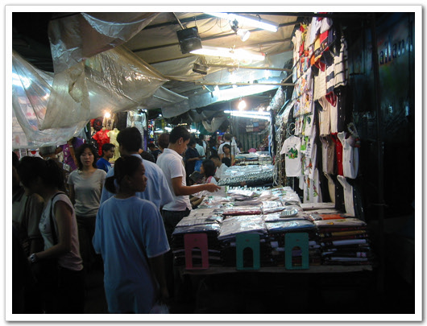 - 파트퐁은 이렇게 야시장처럼 되어 있다. 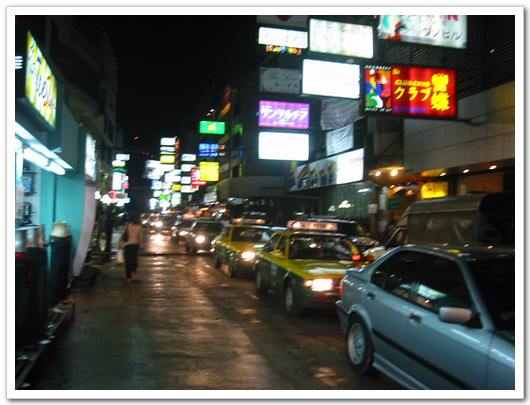 - 좀 더 걸으니, 술집 들만 잔뜩있는 곳이 나오더군. 방콕에서 유명한 것이 마사지이기에, 안마도 한번 받아봐야겠다 생각하고, 마사지를 받으로 갔다. 길을 가다보면 호객행위를 하는 마시지집들도 있었는데, 그런 것들은 아마 음란마시지 같았다. 나는 아주 건전한 마시지하는 하는 집으로 들어갔다. 입구에 타이마시지 200바트, 발마사지 200바트 적혀 있기에 들어가서, 타이마사지를 받겠다고 하였다. 여행가이드책에 설명되는 바로는, 타이마사지는 뼈가 우두둑하는 소리가 들리며 온몸을 비트는 아주 시원한 마사지라 하였는데, 뼈 우두둑거리는 커녕 별로 시원하지도 않았다. 이는 아마 내 근육이 별로 뭉쳐 있지 않아서인 것 같다. 마사지 시간은 1시간인데, 우리나라 청소부 유니폼 비슷한 옷을 입은 여자가 해주었다. 처음에 어느 사람이냐고 묻기에 한국 사람이라고 했다. 그 후에 말을 안 걸더군. 한국 사람들의 나쁜 면들을 많이 겪었나 보다. 별로 시원하지도 않은 마사지를 받은 후, 거리에서 파는 야자열매를 사 먹었다. 20바트다. 시원하긴 한데, 맛이 내 입맛에는 맞지 않았다. 좀 비린내 같은 게 나는 게 영.. 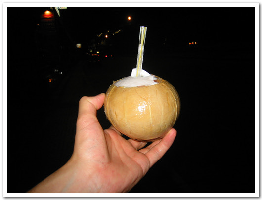 - 한번 맛을 보는 데 의의를 둔 야자열매 밤 10시 숙소에서 불러준 리무진을 타고 공항으로 가 싱가폴항공을 탔다. 새벽 1시 5분 비행기인데, 비행기에는 휴가를 즐기고 복귀하는 사람들로 가득 찼다. 새벽비행기라 피곤도 하여, 그냥 계속 푹 잤다. |
- 2004/01/18 20:40
- badsaarow.egloos.com/6166942
- 덧글수 : 6


최근 덧글